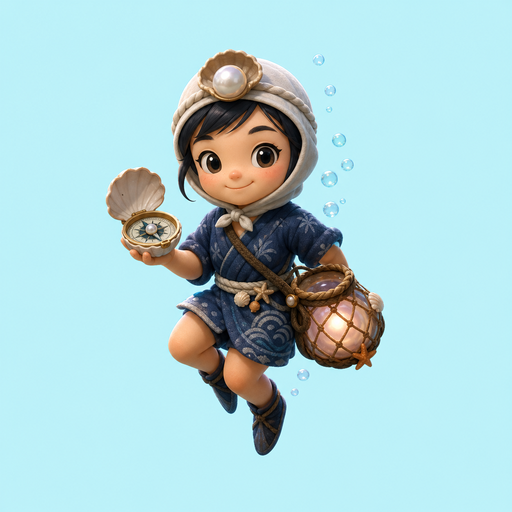

Day 020 · 3D/umi/
Score0
Best0
Shells◆◆◆
Oxygen100%
Combo×1.0
Depth0m
Time0:00
Shallow Shell Path
Umi Pearl Kelp Cartographer
Chart pearl routes through the kelp canyon, refill oxygen at air bells, and complete the Umi Pearl Atlas.
Press Start Dive. Audio starts after the user gesture; visual oxygen and sonar cues always work.
